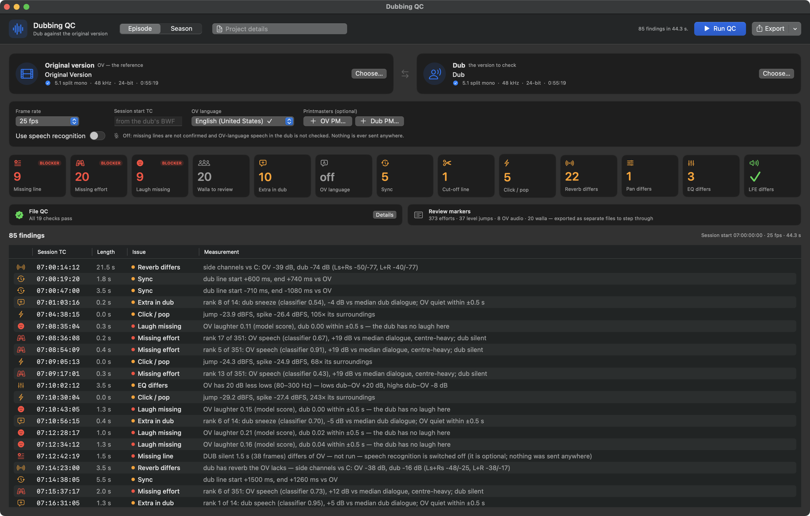
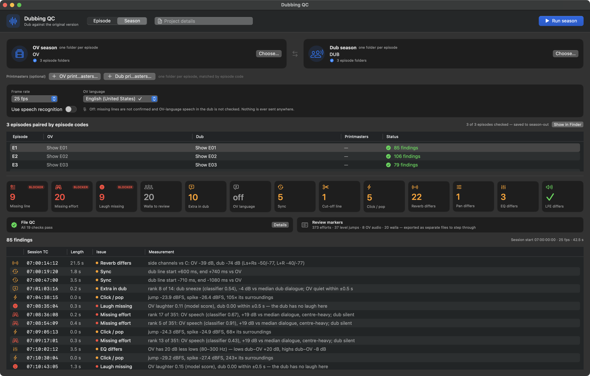
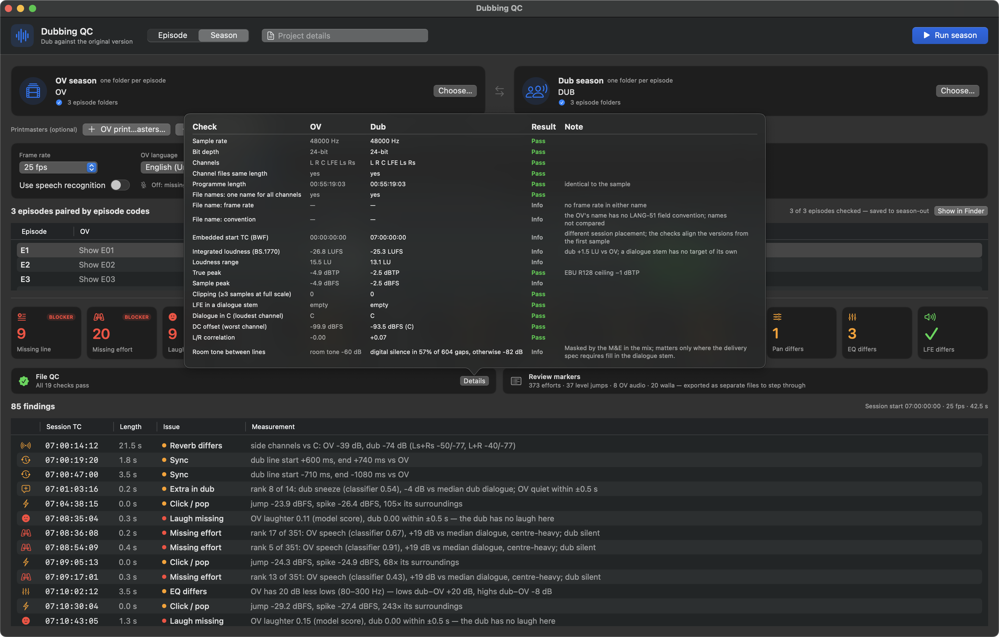
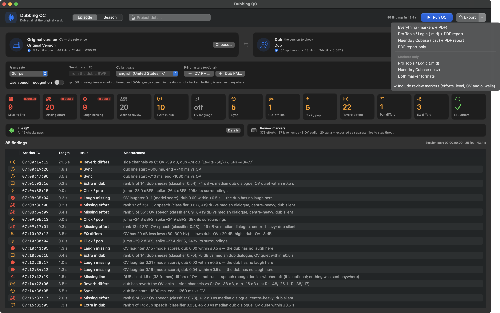

Catch it before your client's QC does
Dubbing QC lines the dub up against the original, channel by channel, and lists every place a mixer should listen: dropped lines and laughs, reverb and pan that don't match, sync slips, clicks.
The dub, lined up against the original
Both versions run on one timeline. Wherever the dub parts from the original, Dubbing QC plants a flag with the session timecode and what it measured.
Illustration of three findings from a real check. The timecodes and measurements are from the results screen further down.
Measured on a real episode


Tested on a real 55-minute TV episode that also went through a professional delivery-QC pass.
Every threshold was measured against real QC reports, planted defects and listening tests. Findings are places to listen, not verdicts: the mixer makes the call.
Fourteen checks, one pass
Grouped as the bars above. With printmasters added, sync turns frame-accurate and loudness is compared too.
Lines
- 01Missing lines and efforts
Breaths, laughs and reactions the original has and the dub doesn't.
- 02Cut-off line endings
Lines that stop mid-sound instead of finishing.
Laughs & walla
- 03Laughs the dub drops
Also when the laugh sits under dub speech.
- 04Walla and crowd the dub is missing
Background voices that went quiet in the dub.
- 05Extra sounds in the dub
Sounds the original doesn't have.
Reverb & pan
- 06Reverb and pan that don't match the original
Measured on the side channels against the centre, line by line.
Sync
- 07Whole-line sync shifts
Lines that start or end out of place; frame-accurate with printmasters.
- 08Printmaster sync and loudness
The dub's printmaster against the original's.
Voice
- 09EQ and voice-treatment mismatches
Phone, radio and other treatments the dub didn't copy.
- 10Original-language audio left in the dub
Stretches of the original recording, and words in the original language.
Signal
- 11Clicks, pops and dropouts
Short jumps far above their surroundings.
- 12Clipping and file-format problems
Sample rate, bit depth, channels, length and peaks.
- 13LFE problems
Low-frequency content the dub adds, drops or routes wrongly.
Files
- 14File naming
Checked against the original's own naming convention.




Three, two, one
Drop in both versions
Split-mono 5.1 WAVs for the original and the dub, same length, same timeline. Printmasters are optional.
Run the check
About a minute for a 55-minute episode. Every finding comes with its session timecode, length and measurement.
Listen and fix
Import the markers into your session and step through them against picture. A person makes every call.
Markers land in your session
Markers use your session's own start timecode. Candidates the audio alone can't judge go to separate review files, so the main list stays short.


Rent it for the job
Free trial
Every check, on your own episode. Once per person and per Mac.
Rent
A fixed number of days for one job. The days start when you first activate it.
One year
365 days of full access and updates. One payment, no automatic renewal.
Prices exclude VAT. Licences are sold by RedPixl s.r.o. on redpixl.dev.
Questions studios ask first
Does my audio ever leave my Mac?
No. Every check, including speech recognition, runs on the Mac. Nothing is uploaded: not your audio, not the findings, not usage data. The licence check sends only your email and a random ID for the Mac.
What files do I need?
Split-mono 5.1 WAVs for the original and the dub, same length and timeline. Printmasters are optional and add frame-accurate sync and loudness checks.
Does it replace a human QC pass?
No. It's a first pass that never gets tired. On a real episode it flagged every reverb and pan issue in the client's QC report and found eleven more the human pass missed. A person still makes the final call on everything it lists.
Which DAWs does the export work with?
Pro Tools and Logic get MIDI marker files; Nuendo and Cubase get CSV. A PDF report comes with every export.
Does it work offline?
Yes. Activating needs the internet once; after that the licence works without a network until it ends.